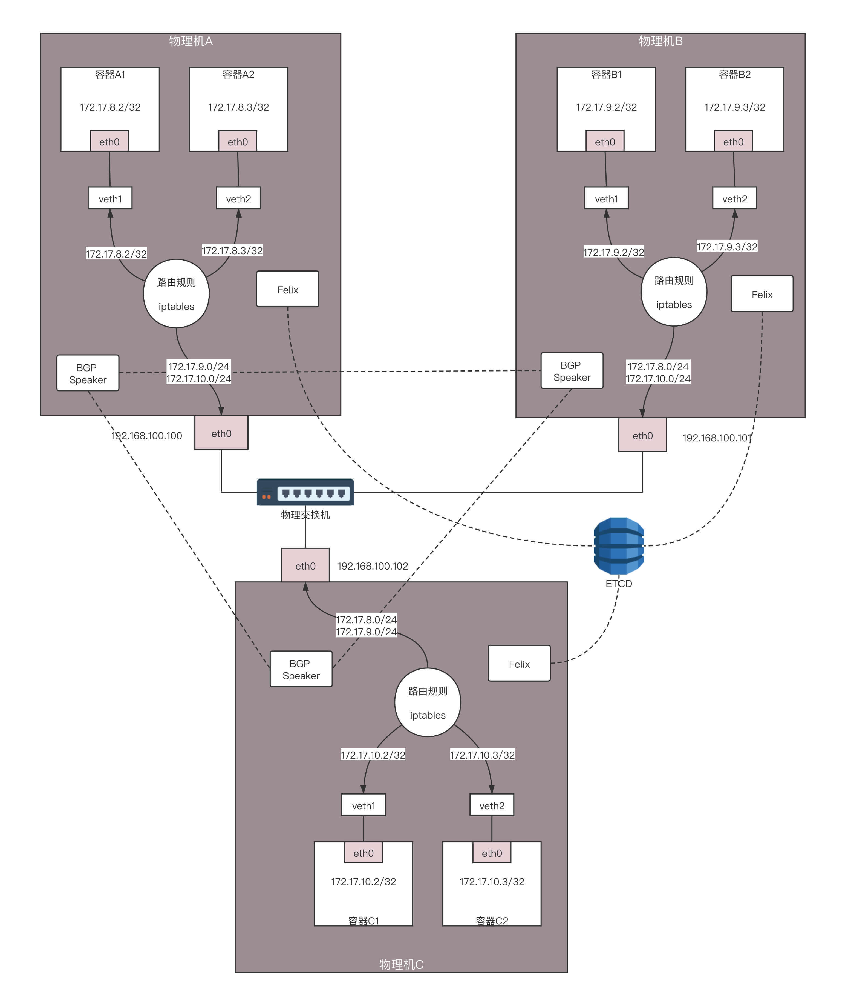

- 00 开篇词 想成为技术牛人？先搞定网络协议！.md
- 01 为什么要学习网络协议？.md
- 02 网络分层的真实含义是什么？.md
- 03 ifconfig：最熟悉又陌生的命令行.md
- 04 DHCP与PXE：IP是怎么来的，又是怎么没的？.md
- 05 从物理层到MAC层：如何在宿舍里自己组网玩联机游戏？.md
- 06 交换机与VLAN：办公室太复杂，我要回学校.md
- 07 ICMP与ping：投石问路的侦察兵.md
- 08 世界这么大，我想出网关：欧洲十国游与玄奘西行.md
- 09 路由协议：西出网关无故人，敢问路在何方.md
- 10 UDP协议：因性善而简单，难免碰到“城会玩”.md
- 11 TCP协议（上）：因性恶而复杂，先恶后善反轻松.md
- 12 TCP协议（下）：西行必定多妖孽，恒心智慧消磨难.md
- 13 套接字Socket：Talk is cheap, show me the code.md
- 14 HTTP协议：看个新闻原来这么麻烦.md
- 15 HTTPS协议：点外卖的过程原来这么复杂.md
- 16 流媒体协议：如何在直播里看到美女帅哥？.md
- 17 P2P协议：我下小电影，99%急死你.md
- 18 DNS协议：网络世界的地址簿.md
- 19 HttpDNS：网络世界的地址簿也会指错路.md
- 20 CDN：你去小卖部取过快递么？.md
- 21 数据中心：我是开发商，自己拿地盖别墅.md
- 22 VPN：朝中有人好做官.md
- 23 移动网络：去巴塞罗那，手机也上不了脸书.md
- 24 云中网络：自己拿地成本高，购买公寓更灵活.md
- 25 软件定义网络：共享基础设施的小区物业管理办法.md
- 26 云中的网络安全：虽然不是土豪，也需要基本安全和保障.md
- 27 云中的网络QoS：邻居疯狂下电影，我该怎么办？.md
- 28 云中网络的隔离GRE、VXLAN：虽然住一个小区，也要保护隐私.md
- 29 容器网络：来去自由的日子，不买公寓去合租.md
- 30 容器网络之Flannel：每人一亩三分地.md
- 31 容器网络之Calico：为高效说出善意的谎言.md
- 32 RPC协议综述：远在天边，近在眼前.md
- 33 基于XML的SOAP协议：不要说NBA，请说美国职业篮球联赛.md
- 34 基于JSON的RESTful接口协议：我不关心过程，请给我结果.md
- 35 二进制类RPC协议：还是叫NBA吧，总说全称多费劲.md
- 36 跨语言类RPC协议：交流之前，双方先来个专业术语表.md
- 37 知识串：用双十一的故事串起碎片的网络协议（上）.md
- 38 知识串：用双十一的故事串起碎片的网络协议（中）.md
- 39 知识串：用双十一的故事串起碎片的网络协议（下）.md
- 40 搭建一个网络实验环境：授人以鱼不如授人以渔.md
- 加餐1 创作故事：我是如何创作“趣谈网络协议”专栏的？.md
- 协议专栏特别福利 答疑解惑1期.md
- 协议专栏特别福利 答疑解惑2期.md
- 协议专栏特别福利 答疑解惑3期.md
- 协议专栏特别福利 答疑解惑4期.md
- 协议专栏特别福利 答疑解惑5期.md
- 结束语 放弃完美主义，执行力就是限时限量认真完成.md
31 容器网络之Calico：为高效说出善意的谎言
上一节我们讲了Flannel如何解决容器跨主机互通的问题，这个解决方式其实和虚拟机的网络互通模式是差不多的，都是通过隧道。但是Flannel有一个非常好的模式，就是给不同的物理机设置不同网段，这一点和虚拟机的Overlay的模式完全不一样。
在虚拟机的场景下，整个网段在所有的物理机之间都是可以“飘来飘去”的。网段不同，就给了我们做路由策略的可能。
Calico网络模型的设计思路
我们看图中的两台物理机。它们的物理网卡是同一个二层网络里面的。由于两台物理机的容器网段不同，我们完全可以将两台物理机配置成为路由器，并按照容器的网段配置路由表。

例如，在物理机A中，我们可以这样配置：要想访问网段172.17.9.0/24，下一跳是192.168.100.101，也即到物理机B上去。
这样在容器A中访问容器B，当包到达物理机A的时候，就能够匹配到这条路由规则，并将包发给下一跳的路由器，也即发给物理机B。在物理机B上也有路由规则，要访问172.17.9.0/24，从docker0的网卡进去即可。
当容器B返回结果的时候，在物理机B上，可以做类似的配置：要想访问网段172.17.8.0/24，下一跳是192.168.100.100，也即到物理机A上去。
当包到达物理机B的时候，能够匹配到这条路由规则，将包发给下一跳的路由器，也即发给物理机A。在物理机A上也有路由规则，要访问172.17.8.0/24，从docker0的网卡进去即可。
这就是Calico网络的大概思路，即不走Overlay网络，不引入另外的网络性能损耗，而是将转发全部用三层网络的路由转发来实现，只不过具体的实现和上面的过程稍有区别。
首先，如果全部走三层的路由规则，没必要每台机器都用一个docker0，从而浪费了一个IP地址，而是可以直接用路由转发到veth pair在物理机这一端的网卡。同样，在容器内，路由规则也可以这样设定：把容器外面的veth pair网卡算作默认网关，下一跳就是外面的物理机。
于是，整个拓扑结构就变成了这个图中的样子。

Calico网络的转发细节
我们来看其中的一些细节。
容器A1的IP地址为172.17.8.2/32，这里注意，不是/24，而是/32，将容器A1作为一个单点的局域网了。
容器A1里面的默认路由，Calico配置得比较有技巧。
default via 169.254.1.1 dev eth0
169.254.1.1 dev eth0 scope link
这个IP地址169.254.1.1是默认的网关，但是整个拓扑图中没有一张网卡是这个地址。那如何到达这个地址呢？
前面我们讲网关的原理的时候说过，当一台机器要访问网关的时候，首先会通过ARP获得网关的MAC地址，然后将目标MAC变为网关的MAC，而网关的IP地址不会在任何网络包头里面出现，也就是说，没有人在乎这个地址具体是什么，只要能找到对应的MAC，响应ARP就可以了。
ARP本地有缓存，通过ip neigh命令可以查看。
169.254.1.1 dev eth0 lladdr ee:ee:ee:ee:ee:ee STALE
这个MAC地址是Calico硬塞进去的，但是没有关系，它能响应ARP，于是发出的包的目标MAC就是这个MAC地址。
在物理机A上查看所有网卡的MAC地址的时候，我们会发现veth1就是这个MAC地址。所以容器A1里发出的网络包，第一跳就是这个veth1这个网卡，也就到达了物理机A这个路由器。
在物理机A上有三条路由规则，分别是去两个本机的容器的路由，以及去172.17.9.0/24，下一跳为物理机B。
172.17.8.2 dev veth1 scope link
172.17.8.3 dev veth2 scope link
172.17.9.0/24 via 192.168.100.101 dev eth0 proto bird onlink
同理，物理机B上也有三条路由规则，分别是去两个本机的容器的路由，以及去172.17.8.0/24，下一跳为物理机A。
172.17.9.2 dev veth1 scope link
172.17.9.3 dev veth2 scope link
172.17.8.0/24 via 192.168.100.100 dev eth0 proto bird onlink
如果你觉得这些规则过于复杂，我将刚才的拓扑图转换为这个更加容易理解的图。

在这里，物理机化身为路由器，通过路由器上的路由规则，将包转发到目的地。在这个过程中，没有隧道封装解封装，仅仅是单纯的路由转发，性能会好很多。但是，这种模式也有很多问题。
Calico的架构
路由配置组件Felix
如果只有两台机器，每台机器只有两个容器，而且保持不变。我手动配置一下，倒也没啥问题。但是如果容器不断地创建、删除，节点不断地加入、退出，情况就会变得非常复杂。
就像图中，有三台物理机，两两之间都需要配置路由，每台物理机上对外的路由就有两条。如果有六台物理机，则每台物理机上对外的路由就有五条。新加入一个节点，需要通知每一台物理机添加一条路由。
这还是在物理机之间，一台物理机上，每创建一个容器，也需要多配置一条指向这个容器的路由。如此复杂，肯定不能手动配置，需要每台物理机上有一个agent，当创建和删除容器的时候，自动做这件事情。这个agent在Calico中称为Felix。
路由广播组件BGP Speaker
当Felix配置了路由之后，接下来的问题就是，如何将路由信息，也即将“如何到达我这个节点，访问我这个节点上的容器”这些信息，广播出去。
能想起来吗？这其实就是路由协议啊！路由协议就是将“我能到哪里，如何能到我”的信息广播给全网传出去，从而客户端可以一跳一跳地访问目标地址的。路由协议有很多种，Calico使用的是BGP协议。
在Calico中，每个Node上运行一个软件BIRD，作为BGP的客户端，或者叫作BGP Speaker，将“如何到达我这个Node，访问我这个Node上的容器”的路由信息广播出去。所有Node上的BGP Speaker 都互相建立连接，就形成了全互连的情况，这样每当路由有所变化的时候，所有节点就都能够收到了。
安全策略组件
Calico中还实现了灵活配置网络策略Network Policy，可以灵活配置两个容器通或者不通。这个怎么实现呢？

虚拟机中的安全组，是用iptables实现的。Calico中也是用iptables实现的。这个图里的内容是iptables在内核处理网络包的过程中可以嵌入的处理点。Calico也是在这些点上设置相应的规则。

当网络包进入物理机上的时候，进入PREOUTING规则，这里面有一个规则是cali-fip-dnat，这是实现浮动IP（Floating IP）的场景，主要将外网的IP地址dnat作为容器内的IP地址。在虚拟机场景下，路由器的网络namespace里面有一个外网网卡上，也设置过这样一个DNAT规则。
接下来可以根据路由判断，是到本地的，还是要转发出去的。
如果是本地的，走INPUT规则，里面有个规则是cali-wl-to-host，wl的意思是workload，也即容器，也即这是用来判断从容器发到物理机的网络包是否符合规则的。这里面内嵌一个规则cali-from-wl-dispatch，也是匹配从容器来的包。如果有两个容器，则会有两个容器网卡，这里面内嵌有详细的规则“cali-fw-cali网卡1”和“cali-fw-cali网卡2”，fw就是from workload，也就是匹配从容器1来的网络包和从容器2来的网络包。
如果是转发出去的，走FORWARD规则，里面有个规则cali-FORWARD。这里面分两种情况，一种是从容器里面发出来，转发到外面的；另一种是从外面发进来，转发到容器里面的。
第一种情况匹配的规则仍然是cali-from-wl-dispatch，也即from workload。第二种情况匹配的规则是cali-to-wl-dispatch，也即to workload。如果有两个容器，则会有两个容器网卡，在这里面内嵌有详细的规则“cali-tw-cali网卡1”和“cali-tw-cali网卡2”，tw就是to workload，也就是匹配发往容器1的网络包和发送到容器2的网络包。
接下来是匹配OUTPUT规则，里面有cali-OUTPUT。接下来是POSTROUTING规则，里面有一个规则是cali-fip-snat，也即发出去的时候，将容器网络IP转换为浮动IP地址。在虚拟机场景下，路由器的网络namespace里面有一个外网网卡上，也设置过这样一个SNAT规则。
至此为止，Calico的所有组件基本凑齐。来看看我汇总的图。

全连接复杂性与规模问题
这里面还存在问题，就是BGP全连接的复杂性问题。
你看刚才的例子里只有六个节点，BGP的互连已经如此复杂，如果节点数据再多，这种全互连的模式肯定不行，到时候都成蜘蛛网了。于是多出了一个组件BGP Route Reflector，它也是用BIRD实现的。有了它，BGP Speaker就不用全互连了，而是都直连它，它负责将全网的路由信息广播出去。
可是问题来了，规模大了，大家都连它，它受得了吗？这个BGP Router Reflector会不会成为瓶颈呢？
所以，肯定不能让一个BGP Router Reflector管理所有的路由分发，而是应该有多个BGP Router Reflector，每个BGP Router Reflector管一部分。
多大算一部分呢？咱们讲述数据中心的时候，说服务器都是放在机架上的，每个机架上最顶端有个TOR交换机。那将机架上的机器连在一起，这样一个机架是不是可以作为一个单元，让一个BGP Router Reflector来管理呢？如果要跨机架，如何进行通信呢？这就需要BGP Router Reflector也直接进行路由交换。它们之间的交换和一个机架之间的交换有什么关系吗？
有没有觉得在这个场景下，一个机架就像一个数据中心，可以把它设置为一个AS，而BGP Router Reflector有点儿像数据中心的边界路由器。在一个AS内部，也即服务器和BGP Router Reflector之间使用的是数据中心内部的路由协议iBGP，BGP Router Reflector之间使用的是数据中心之间的路由协议eBGP。
这个图中，一个机架上有多台机器，每台机器上面启动多个容器，每台机器上都有可以到达这些容器的路由。每台机器上都启动一个BGP Speaker，然后将这些路由规则上报到这个Rack上接入交换机的BGP Route Reflector，将这些路由通过iBGP协议告知到接入交换机的三层路由功能。
在接入交换机之间也建立BGP连接，相互告知路由，因而一个Rack里面的路由可以告知另一个Rack。有多个核心或者汇聚交换机将接入交换机连接起来，如果核心和汇聚起二层互通的作用，则接入和接入之间之间交换路由即可。如果核心和汇聚交换机起三层路由的作用，则路由需要通过核心或者汇聚交换机进行告知。
跨网段访问问题
上面的Calico模式还有一个问题，就是跨网段问题，这里的跨网段是指物理机跨网段。
前面我们说的那些逻辑成立的条件，是我们假设物理机可以作为路由器进行使用。例如物理机A要告诉物理机B，你要访问172.17.8.0/24，下一跳是我192.168.100.100；同理，物理机B要告诉物理机A，你要访问172.17.9.0/24，下一跳是我192.168.100.101。
之所以能够这样，是因为物理机A和物理机B是同一个网段的，是连接在同一个交换机上的。那如果物理机A和物理机B不是在同一个网段呢？
 -
-
例如，物理机A的网段是192.168.100.100/24，物理机B的网段是192.168.200.101/24，这样两台机器就不能通过二层交换机连接起来了，需要在中间放一台路由器，做一次路由转发，才能跨网段访问。
本来物理机A要告诉物理机B，你要访问172.17.8.0/24，下一跳是我192.168.100.100的，但是中间多了一台路由器，下一跳不是我了，而是中间的这台路由器了，这台路由器的再下一跳，才是我。这样之前的逻辑就不成立了。
我们看刚才那张图的下半部分。物理机B上的容器要访问物理机A上的容器，第一跳就是物理机B，IP为192.168.200.101，第二跳是中间的物理路由器右面的网口，IP为192.168.200.1，第三跳才是物理机A，IP为192.168.100.100。
这是咱们通过拓扑图看到的，关键问题是，在系统中物理机A如何告诉物理机B，怎么让它才能到我这里？物理机A根本不可能知道从物理机B出来之后的下一跳是谁，况且现在只是中间隔着一个路由器这种简单的情况，如果隔着多个路由器呢？谁能把这一串的路径告诉物理机B呢？
我们能想到的第一种方式是，让中间所有的路由器都来适配Calico。本来它们互相告知路由，只互相告知物理机的，现在还要告知容器的网段。这在大部分情况下，是不可能的。
第二种方式，还是在物理机A和物理机B之间打一个隧道，这个隧道有两个端点，在端点上进行封装，将容器的IP作为乘客协议放在隧道里面，而物理主机的IP放在外面作为承载协议。这样不管外层的IP通过传统的物理网络，走多少跳到达目标物理机，从隧道两端看起来，物理机A的下一跳就是物理机B，这样前面的逻辑才能成立。
这就是Calico的IPIP模式。使用了IPIP模式之后，在物理机A上，我们能看到这样的路由表：
172.17.8.2 dev veth1 scope link
172.17.8.3 dev veth2 scope link
172.17.9.0/24 via 192.168.200.101 dev tun0 proto bird onlink
这和原来模式的区别在于，下一跳不再是同一个网段的物理机B了，IP为192.168.200.101，并且不是从eth0跳，而是建立一个隧道的端点tun0，从这里才是下一跳。
如果我们在容器A1里面的172.17.8.2，去ping容器B1里面的172.17.9.2，首先会到物理机A。在物理机A上根据上面的规则，会转发给tun0，并在这里对包做封装：
-
内层源IP为172.17.8.2；
-
内层目标IP为172.17.9.2；
-
外层源IP为192.168.100.100；
-
外层目标IP为192.168.200.101。
将这个包从eth0发出去，在物理网络上会使用外层的IP进行路由，最终到达物理机B。在物理机B上，tun0会解封装，将内层的源IP和目标IP拿出来，转发给相应的容器。
小结
好了，这一节就到这里，我们来总结一下。
-
Calico推荐使用物理机作为路由器的模式，这种模式没有虚拟化开销，性能比较高。
-
Calico的主要组件包括路由、iptables的配置组件Felix、路由广播组件BGP Speaker，以及大规模场景下的BGP Route Reflector。
-
为解决跨网段的问题，Calico还有一种IPIP模式，也即通过打隧道的方式，从隧道端点来看，将本来不是邻居的两台机器，变成相邻的机器。
最后，给你留两个思考题：
-
将Calico部署在公有云上的时候，经常会选择使用IPIP模式，你知道这是为什么吗？
-
容器是用来部署微服务的，微服务之间的通信，除了网络要互通，还需要高效地传输信息，例如下单的商品、价格、数量、支付的钱等等，这些要通过什么样的协议呢？
我们的专栏更新到第31讲，不知你掌握得如何？每节课后我留的思考题，你都有没有认真思考，并在留言区写下答案呢？我会从已发布的文章中选出一批认真留言的同学，赠送学习奖励礼券和我整理的独家网络协议知识图谱。
欢迎你留言和我讨论。趣谈网络协议，我们下期见！
© 2019 - 2023 Liangliang Lee. Powered by Vert.x and hexo-theme-book.